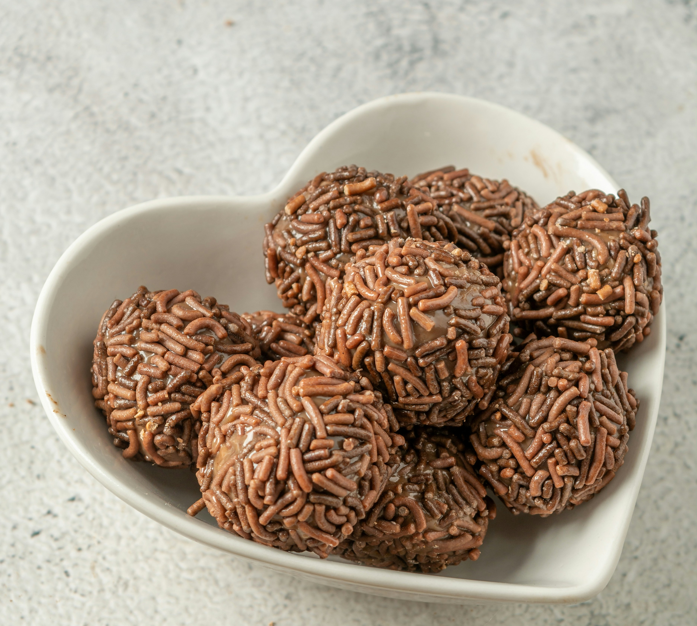

Brigadeiro
Here, I will teach you how to make one of my favorite Brazilian sweets: brigadeiro.

Brigadeiro is a very popular comfort food in Brazil, and it's very easy to make too!
It's named after the Brazilian airforce rank "brigadeiro", meaning "brigadier" in Portuguese. This name originates from the fact that the sweet was used as a means to raise funds for brigadier-general Eduardo Gomes's campaign by his supporters when he ran for president.
Now, enough talk! Time to get to work! Follow the steps below to make some yourself!
Ingredients:
- Condensed milk: 1 can (about 395g)
- Chocolate-flavored powder or cocoa powder: 3 tablespoons
- Butter or margerine
- Small chocolate flakes
How to make:
- First, before switching on the stove, empty the can of condensed milk into a medium-sized pot.
- Next, throw 3 fairly generous tablespoons of the chocolate powder into the condensed milk and mix it well with a cooking spoon until all of the powder has dissolved.
- Switch on the stove on medium heat and keep stirring the mixture to prevent it from sticking to the bottom of the pot.
- Keep stirring for about ten minutes until the chocolate starts to peel off the bottom of the pot by itself when you tilt it slightly.
- Once you reach this point, the brigadeiro is done! You can eat it like this if you want, but follow the steps below to make them into the traditional little balls of chocolate.
- Grease your hands with the butter or margerine to prevent the brigadeiro from sticking to them.
- Take a spoonful of the brigadeiro into your hands and roll it between your palms in circular movements to make it into a little ball of chocolate.
- Repeat this until you've used all of the brigadeiro. You should be able to make about 20 with that amount, depending on the size you choose.
- Lastly, fill a plate or tray with the chocolate flakes and roll the choccy balls around in it.
- Now you can put each brigadeiro in small cupcake liners for a nice presentation and it's done! Enjoy!
I hope you liked this recipe!
There is another recipe called "palha italiana" that uses the same chocolate mixture from the brigadeiro, so if you enjoyed brigadeiro you should definitely check it out here!
Or head back to the main page to check out our other recipes!